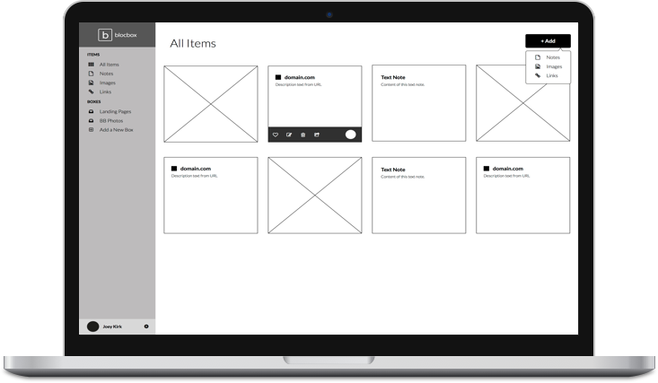
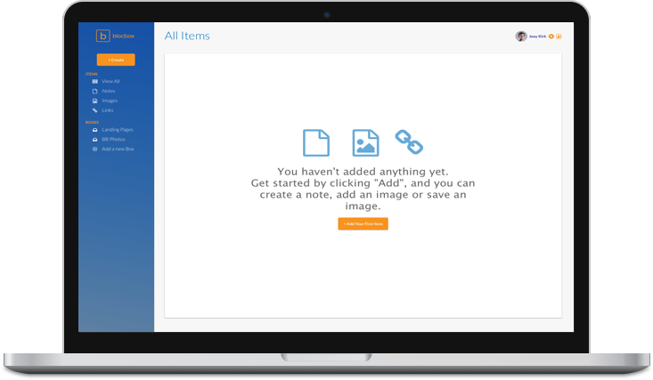
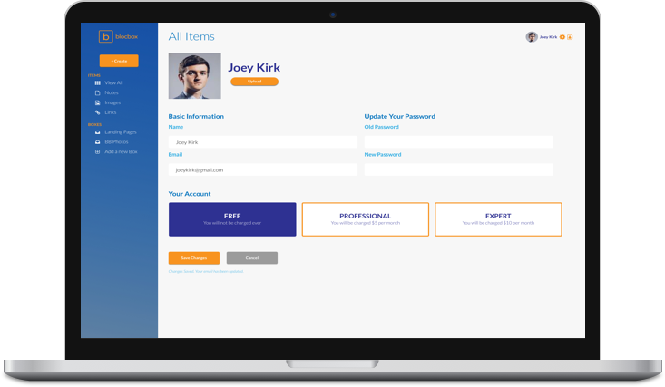
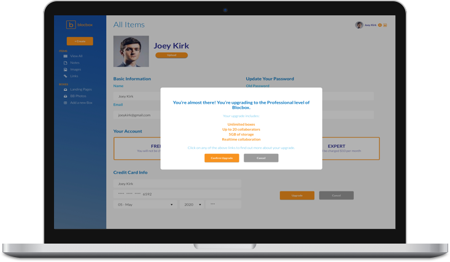
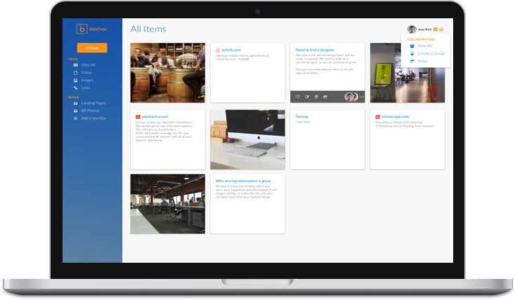

Blocbox
Blocbox is a cloud storage website I developed at Bloc, using user research, wireframing, prototyping and user testing to complete the project. Blocbox aims to give users the ability to store notes, images and links directly onto the web for easy access. Blocbox is a simple to use product that aims for collaborative storage and multiple projects with Boxes.
The Problem
Users were not satisfied with current websites and technologies used to save notes, links and images, with some stating that it was not easy enough to do so and others saying that current technology isn’t satisfactory in their capabilities.
The Solution
The solution was to create a web platform with easy access to content items and ease of use. We also wanted to enable working on large-scale projects with lots of items, as well as offering the ability to work collaboratively with others.
Process
Finding what the User wanted
Our process included user research via polling for problems with the existing marketplace, and investigating what users were looking for in terms of cloud storage for content.
Polling Questions here.
From the results, we concluded that users were looking for an easy to use, easy access website that offered the ability to quickly share and collaborate with other people. We decided to offer the feature of “collaborators”, along with the ability to handle large scale projects with Box. The most basic use remains the same: giving users a quick and easy way to access and save content.
Results here.
Competitive Analysis
We conducted our competitive analysis on Google Drive, Dropbox and Evernote. While both Google Drive and Dropbox had desktop sync and easy to use interfaces, Google Drive lacked editing capabilities for some document types and sharing took too many steps, while Dropbox had small storage space and users had to edit files outside of the website. Evernote was more versatile in their note taking platform, but was not as intuitive to use as the other two.
Once we were done with our competitive analysis, we went on to map out our user flow, to determine what steps a customer went through when they use Blocbox.
Full user stories here.
Personas can be found here.
Low-Fi and Hi-Fi Mockups give starting point
From there we went to wireframing and prototyping, with some low-fi and hi-fi mockups.
Above is a wireframe mockup of our dashboard, with an enlarged contents section to place an emphasis content organization, as well as a simple left hand navigation and drop downs for our buttons. We made 2 different versions of the dashboard, with the other version having a top navigation. We decided this version ultimately was more user friendly so continued to design based off of this wireframe.
Full low-fi mockup here.
After our low-fi mockups were completed, we went on to design our prototype. After designing some wireframes and sketching up some logo designs, we were ready to begin hi-fi mockups. Our first version of Blocbox was modeled directly after the low-fi mockup, with a feature-heavy homepage and easy-to-use dashboard and content management system.
Style Guide and Logo Sketches can be found here.
Hi-Fi Mockups can be found here.
Simplistic navigation with an easy to use interface
After we finished designing the homepage and dashboard, we went on to showcase how users would create content. The three types of content a user could create were Notes, Images and Links. Our designs were meant to be highly visual, yet keep in the user experience part of the process by making the process very easy and intuitive to use compared to other platforms.
Building out Account Settings
We also decided built out our Account Settings page. We added a nice UX feature to indicate changes had been saved down near the bottom, as well as updated our Content Creation system to have an "auto-save" feature to indicate to the user that their changes had been committed.
As a user, I want to upgrade my account
Another user story we wanted to touch upon was the ability to upgrade the user account to the next feature level. Through the Account Settings page, you could upgrade to either Professional or Expert levels, which included additonal features. The website would take you through these features in a popup window once you were committed to making an upgrade, and then ask you for CC info. We also included a small popup error window in case the credit card did not run successfully, which we felt was essential to the user experience.
As a user, I want to add, view and manage my collaborators
The last user story we wanted to work on was the ability to add, view and manage collaborators to content items. The gray hover effect at the bottom indicated how many collaborators were on the item, while a dropdown menu in the upper right hand corner took you to the collaborators page where a user could view and manage their collaborators. The ability to add collaborators is also available on all content items for easy use.
After user testing the hi-fi mockup and getting feedback, we proceeded to fully design Blocbox and send it out for user testing. After receiving positive feedback on the user testing, we then went on to code a very simplified version of Blocbox homepage and dashboard for a live version.
User Testing Feedback here.
Live Version Homepage here.
Live Version Dashboard here.
Conclusion
Blocbox worked well with our users. They enjoyed how easy the product was to use and the collaborative features and overall design. A final point of feedback was that our product needed something to make it really stand out above the competition. My doubts going into this project was that it may be impossible to design a product that would cater to simple, I-just-want-to-save-stuff users as well as collaborative, heavy-use users. What surprised me the most was how tricky it was to code our design from scratch. If I had more time, I would have made sure that user testing reached a greater audience. I learned how the design process works as well as how to both design and code during this project. I will carry this knowledge on to future projects.